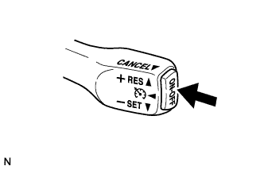
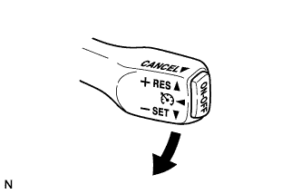
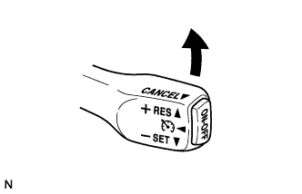
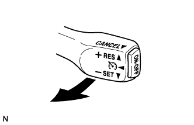

СИСТЕМА КРУИЗ-КОНТРОЛЯ > ДОРОЖНОЕ ИСПЫТАНИЕ |
| ПРОВЕРЬТЕ ВЫКЛЮЧАТЕЛЬ SET |
|  |
Включите выключатель круиз-контроля.
Убедитесь в том, что на щитке приборов горит главная контрольная лампа круиз-контроля CRUISE.
Двигайтесь на автомобиле с требуемой скоростью (в диапазоне от 40 до 200 км/час [от 25 до 125 миль в час]).
|  |
Отожмите выключатель круиз-контроля в положение -SET.
Убедитесь в том, что на щитке приборов горит контрольная лампа SET.
Отпустите выключатель и убедитесь, что автомобиль движется с требуемой скоростью.
| ПРОВЕРЬТЕ ВЫКЛЮЧАТЕЛЬ "+" |
Включите выключатель круиз-контроля.
Двигайтесь на автомобиле с требуемой скоростью (в диапазоне от 40 до 200 км/час [от 25 до 125 миль в час]).
Отожмите выключатель круиз-контроля в положение -SET.
|  |
Убедитесь, что скорость автомобиля возрастает при переключении выключателя круиз-контроля в положение +RES, и автомобиль движется с требуемой скоростью после того, как выключатель круиз-контроля отпущен.
Кратковременно отожмите выключатель круиз-контроля вверх в положение +RES и сразу же отпустите его. Убедитесь, что скорость автомобиля увеличилась примерно на 1,6 км/час (1 милю в час) (функция повышения скорости).
| ПРОВЕРЬТЕ ВЫКЛЮЧАТЕЛЬ "-" |
Включите выключатель круиз-контроля.
Двигайтесь на автомобиле с требуемой скоростью (в диапазоне от 40 до 200 км/час [от 25 до 125 миль в час]).
Отожмите выключатель круиз-контроля в положение -SET.
Убедитесь, что скорость автомобиля уменьшается при переключении выключателя круиз-контроля в положение -SET, и автомобиль движется с требуемой скоростью после того, как выключатель отпущен.
Кратковременно отожмите выключатель круиз-контроля вниз в положение -SET и сразу же отпустите его. Убедитесь, что скорость автомобиля уменьшилась примерно на 1,6 км/час (1 милю в час) (функция понижения скорости).
| ПРОВЕРЬТЕ ФУНКЦИЮ ОТМЕНЫ (ВЫКЛЮЧАТЕЛЬ CANCEL) |
Включите выключатель круиз-контроля.
Двигайтесь на автомобиле с требуемой скоростью (в диапазоне от 40 до 200 км/час [от 25 до 125 миль в час]).
Отожмите выключатель круиз-контроля в положение -SET.
При выполнении одной из следующих операций убедитесь, что система круиз-контроля отключается и устанавливается обычный режим вождения.
| ПРОВЕРЬТЕ ВЫКЛЮЧАТЕЛЬ RES (RESUME) |
Включите выключатель круиз-контроля.
Двигайтесь на автомобиле с требуемой скоростью (в диапазоне от 40 до 200 км/час [от 25 до 125 миль в час]).
Отожмите выключатель круиз-контроля в положение -SET.
Отключите систему круиз-контроля, выполнив одно из следующих действий.
|  |
После установки выключателя круиз-контроля в положение +RES при движении на скорости свыше 40 км/час (25 миль в час) убедитесь, что скорость автомобиля восстанавливается до уровня, который был задан до отключения.